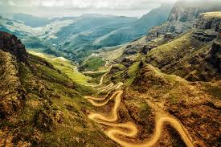
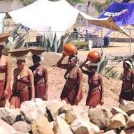
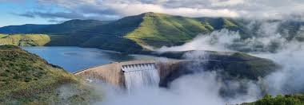
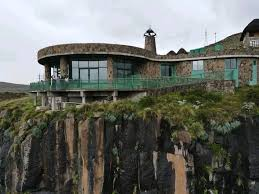

Sani Pass is a famous mountain road located in the Drakensberg Mountains between Lesotho and South Africa (Mokhotlong area).
It is a steep and winding gravel road used by 4x4 vehicles.
The pass offers dramatic mountain views and is popular for adventurous road trips and scenic tourism.

Experience the daily life of Basotho people by visiting a cultural village.
Here, women can be seen carrying clay potsband wearing traditional attire,
showing how water and food are collected and prepared.

Katse Dam is one of the most famous attractions in Lesotho and a major engineering landmark. It is located in the Maluti Mountains in the Thaba-Tseka District.
The dam was built as part of the Lesotho Highlands Water Project and is surrounded by dramatic mountain scenery.
Visitors enjoy breathtaking views of the reservoir and surrounding rugged mountains. It is also a key tourism spot for photography and sightseeing.

This is is one of highest researves in Africa. it lies at the top Mafika-Lisiu Pass, leading to Katse Bam and reaches an altitude of 3090m above sea level
